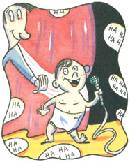

LAST LAUGH
"Hey, Rube, look at that man burning leaves," I said, squatting to my son's eye level and pointing to the fine that almost singed an above-ground swimming pool. "What's wrong with this picture?"
My claim to immortality paused, thought. "He's too close."
"What might happen?" I prompted.
"Burn a hole."
"And... "
"Water'll go all over the fire." Rube chortled and clapped his hands.
"Hey, buddy," I shouted, "my son likes your fire extinguisher."
The leaf-burner studied his fire for a moment. Then he grinned. "Actually, I was trying a new way to heat the pool."
There was a man after my own heart, a man with a sense of humor. And that's exactly what I wanted to teach my son: to see the funny side of life. I never had any help as a kid. Everything I learned about whimsy, I learned on my own. But my son was going to have it easy. I was going to teach him the joy of jokes the way some people teach their children to build a log cabin, step by step.
One of the first lessons was how to size up an audience. We were getting a preschool physical when the pediatric nurse strapped a blood pressure cuff on my arm to show Rube that it wouldn't hurt. I took the occasion to rub her wrist. "You'll have to excuse me," I said. "I'm just not feeling myself today."
"Mr. Sandwich," the nurse sniffed as she pulled herself to the full height of her indignation and marched out of the room.
"Now we know not to waste good jokes on her," I explained to my son. "She was probably a deprived child. I bet her parents never played a joke on her or asked her riddles or even made puns." I sighed. "There but for the grace of God go I."
I remember the first time I encountered comically deprived children. I had just died - as us comedians refer to telling a joke that bombs - at my friend's house, in front of his parents and grandparents. It was the old gag about why we put angels on top of Christmas trees. You know, the one about Santa being all stressed-out because the reindeer had hoof-and-mouth disease and the elves were on strike and Mrs. Claus had the flu, when an angel bounced into the toy shop with a Christmas tree and asked, "Where would you like me to stick this, Santa?"
Everyone just stared at me. I quickly added, "So, from that day to this, the angel sits on top of the Christmas tree."
Nothing.
You can't blame the kids in that situation. They didn't know any better. It's the parents' responsibility to introduce their children to the finer nuances of humor in our culture. Somebody needs to spend quality time with those kids, loosening them up to the possibilities of word play, the surprise of the unexpected, not to mention the joy of a roomful of people groaning in unison.
You can imagine my delight in another class-clown-in-the-making when Rube came home from the fist day of school and announced, "It's a tough house, Dad."
"And how's your teacher."
"Too d#@$%& sweet."
"I prefer that you don't use that word."
"Okay. She's too d#@$%& nice."
My efforts were paying off. But like a good coach, I looked for every opportunity to challenge my star prospect. For example, one day at the beach, a live Barbie doll lay on her see-through air mattress in the shallow water. What caught my eye was the turquoise dog's leash - I'm serious now, humor is not a laughing matter - that trailed from her hand straight into the lake. I nudged Rube and rolled my eyes at the floating princess.
"What's wrong with this picture?"
"She's probably using it like an anchor rope, tied to a rock or something," he offered.
"Come on, you can do better than that," I coaxed.
Rube's eyes started to dance. "Maybe she's taking her catfish for a walk?"
I shrugged. "Not bad. Try again."
Rube looked at me, grinned.
"Go for it."
"Excuse me, lady," my son said. "In case you didn't realize ...your dog's been underwater for a long time."
Some months later, shopping for Christmas ornaments, my son and I priced a set of colored lights.
"Let's see," I calculated, "$9.95 plus six percent for tax brings it to..."
"Tacks?" Rube inquired. "What do you need tacks for? Don't you just loop the lights over the branches?"
I stopped. Studied my son. "Tax, as in income tax. Only this is a sales..." That's when I caught the comer of his mouth twitching. He got me. He had me going. For a person who sees life as a stage and every person out there as an audience, you have to admit my son did me proud. He's got the eye, the timing, whatever you want to call it.
When it was our turn at the register, the clerk checked my ID.
"James Sandwich," he read aloud. "Interesting name. Ever think of working in a deli?" I grimaced. How rude, taking liberties with my name.
"And what's your son's name? Ham? Ham Sandwich?"
"No," Rube replied, "my name's Reuben..." My son stopped. Stared at me for a long time.
He hasn't told a joke since. And he was coming along so fine.
|
 |
|
|